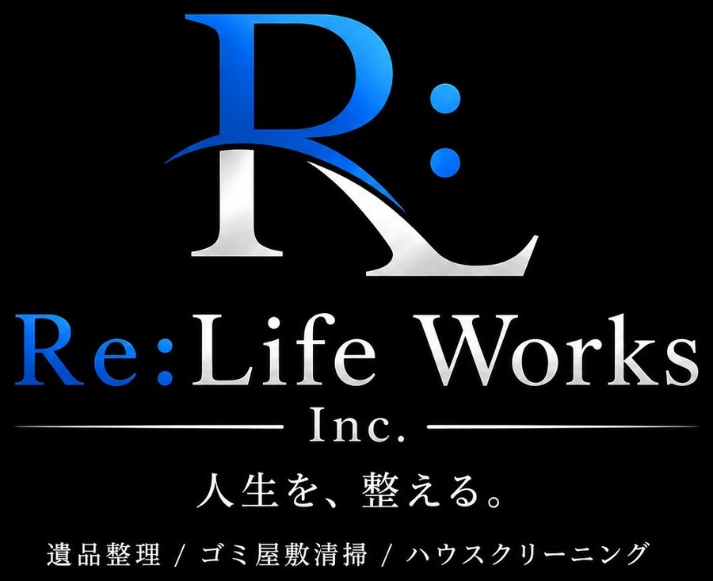

※ この映像はAIで生成したイメージビデオです。
登場する人物・店舗・作業風景はフィクションです。
PROFESSIONAL WORK, FAIR PRICE
綺麗な未来を創る！
RESULTS — Re：Life Works
飲食店の衛生管理を支える、プロの仕事。
飲食店グリストラップ — 油脂・ヘドロ除去
埋設型グリストラップ — 固形油脂完全除去
厨房床埋込み型 — 配管・トラップ内壁洗浄
ステンレス枠型 — 油脂分解・透明水復旧
屋外埋設型グリストラップ — 油脂塊・沈殿物除去
飲食店フロアタイル — 油汚れ・黒ずみ洗浄
SERVICE

清掃部門
株式会社EARTHIA工業の清掃部門です。
店舗・オフィス・ご家庭の清掃を、見積無料・24時間対応で承ります。
福井・北陸、どこへでも伺います。
飲食店のグリストラップを徹底洗浄。悪臭・害虫の発生を防ぎ、衛生的な環境を保ちます。施工前後は下の「実績」でご覧いただけます。
厨房・トイレ・洗面などの配管の詰まりを、専用機材でスムーズに解消します。
店舗・オフィス・ご家庭の床を、専用洗剤・機材でしっかり洗浄。頑固な汚れもお任せください。
カーペットのシミ・汚れ・ニオイを専用機材で丸洗いし、見違えるほどきれいに。
床清掃のオプションです。床にツヤを出し、美観を保ちます。店舗・オフィス・ご家庭どこでも対応します。
内部のカビ・ホコリを徹底洗浄し、空気をきれいに。電気代の節約や、嫌なニオイの改善にもつながります。
このほか ハウスクリーニング・遺品整理・ゴミ屋敷清掃・ 空調清掃・害虫駆除・高圧洗浄・定期メンテナンスも承ります。 料金は内容によりますので、まずはお問い合わせください。
COMPANY
| 会社名 | 株式会社EARTHIA工業EARTHIA INDUSTRIES CO., LTD. |
|---|---|
| 代表者 | 代表取締役 菅谷 勇貴YUKI SUGAYA |
| 事業部門 | 清掃部門 Re:Life Works飲食店・施設の清掃、メンテナンス工業部門土木・建設・プラント・人材 |
| 所在地 | 〒918-8203 福井県福井市上北野1-18-17 1F右扉 |
| 電話番号 | 090-3290-0005 |
| FAX | 0776-76-2352 |
| メール | earth67@outlook.jp |
CONTACT
〒918-8203 福井県福井市上北野1-18-17 1F右扉